上一章
这章关于open campus及疫情开始校长请留学生吃饭。
这是2019年8月的オープンキャンパス（open campus）。活动对象主要是高中生，让他们了解一下这所大学，吸引人来读。活动一连两天时间，各个院系都会展示自己的特色。这天学校停车场全满，很多家长和孩子一起来，也有高中开大巴车来。我参观了朋友打工的放射光。
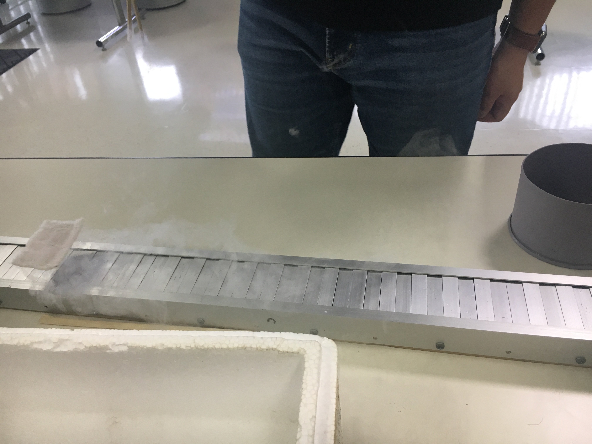
这个很神奇吧。我忘了原理。
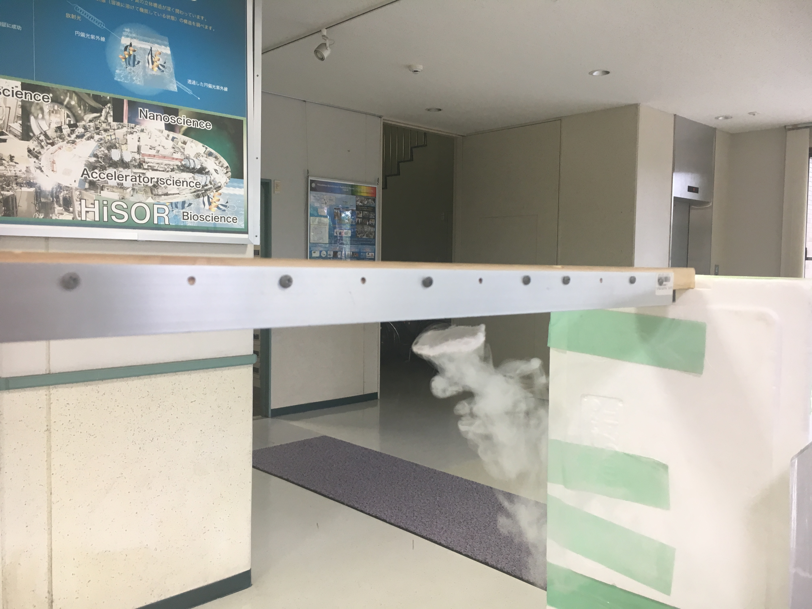
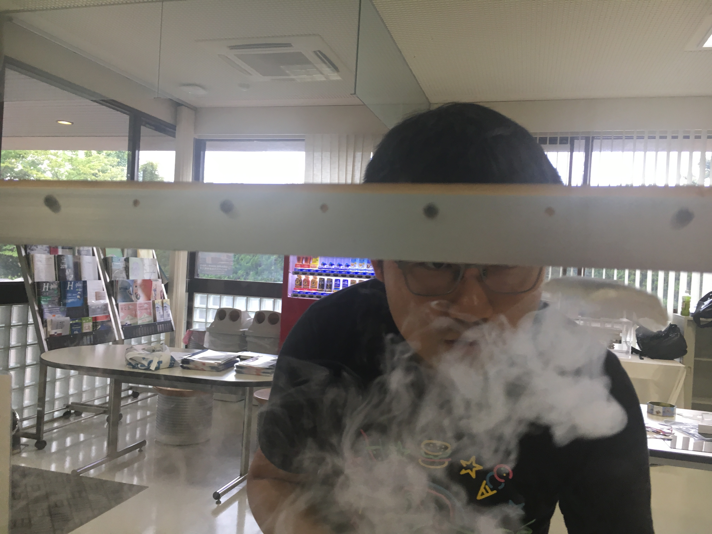
杨冲在这里打工，我就来看了。
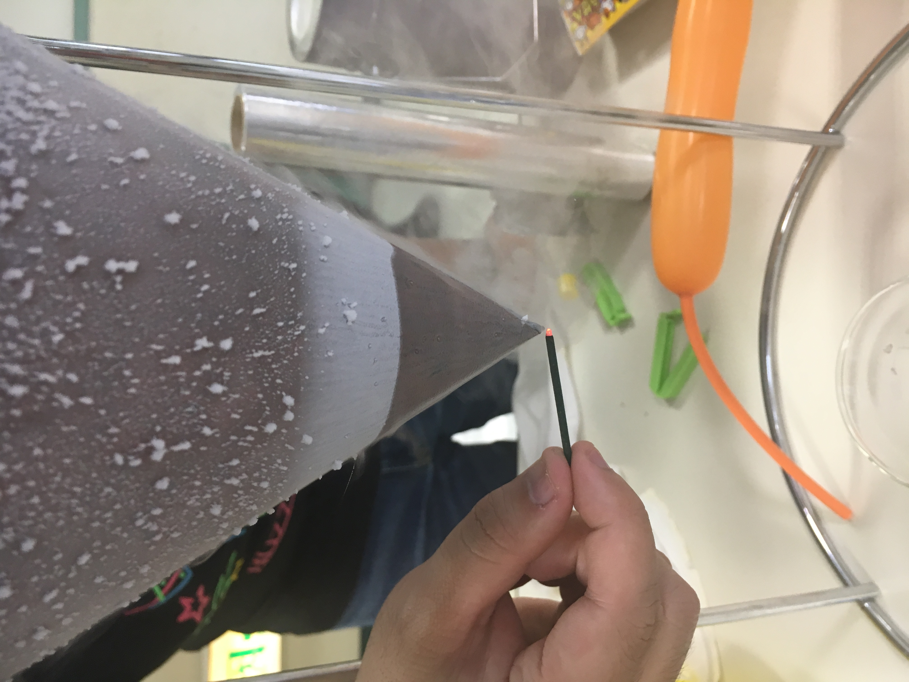
这个点火忘了是啥。
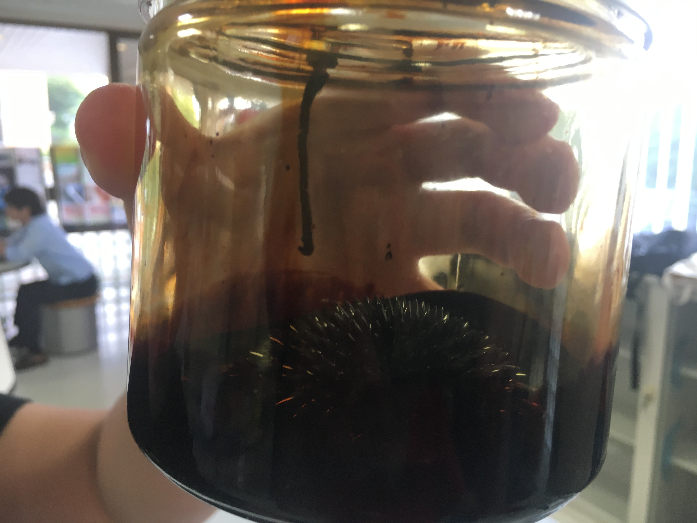
这个忘了是不是磁铁？我记得当时接触过磁铁搞到我钥匙坏了（我用的钥匙不是传统的，每个住客钥匙样子都一样，这个实验后我才知道开门原理和应该磁铁有关。）
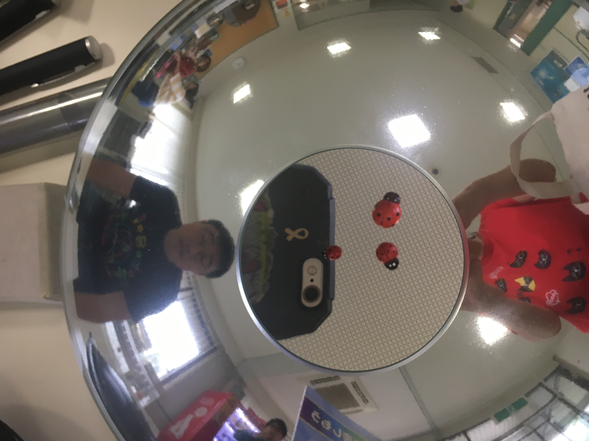
上面的昆虫不是真的在上面的，当然我又忘了物理原理。
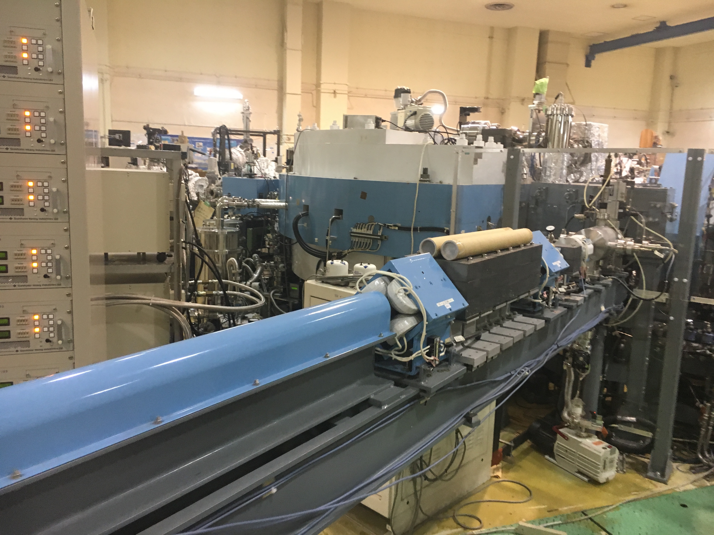
放射光实验室
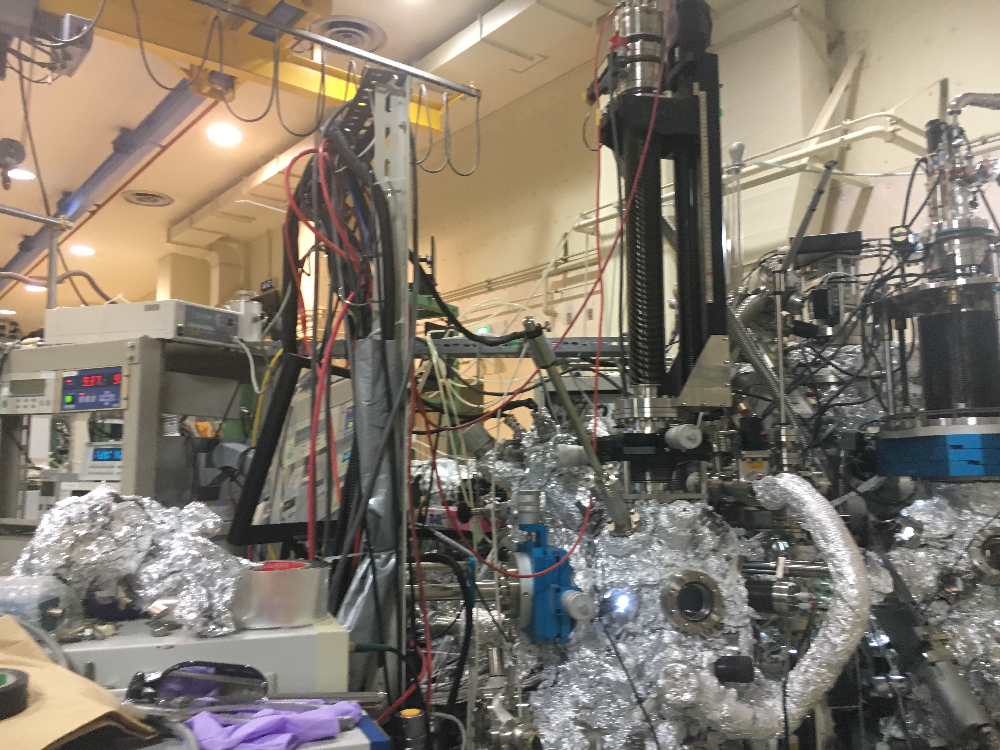
放射光实验室
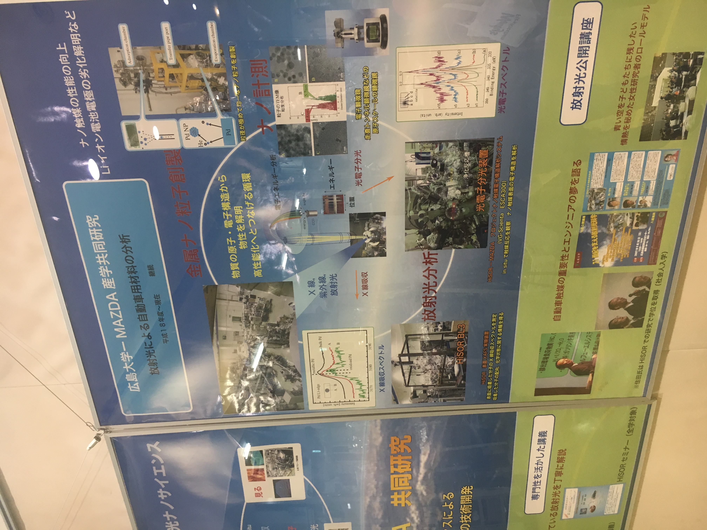
放射光实验室展示板
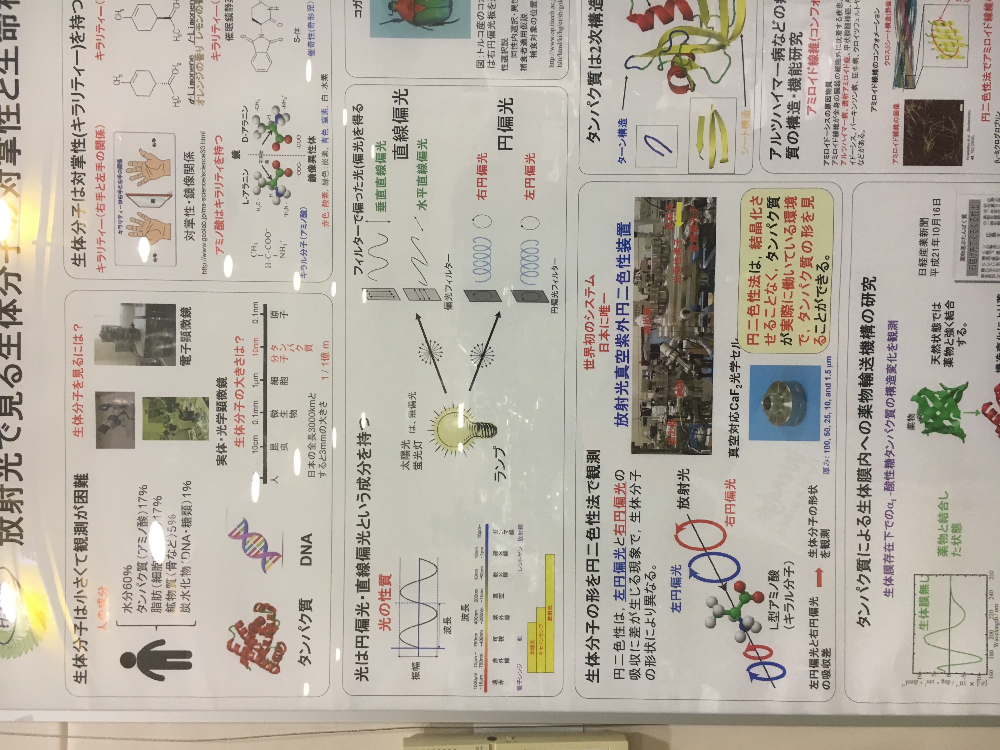
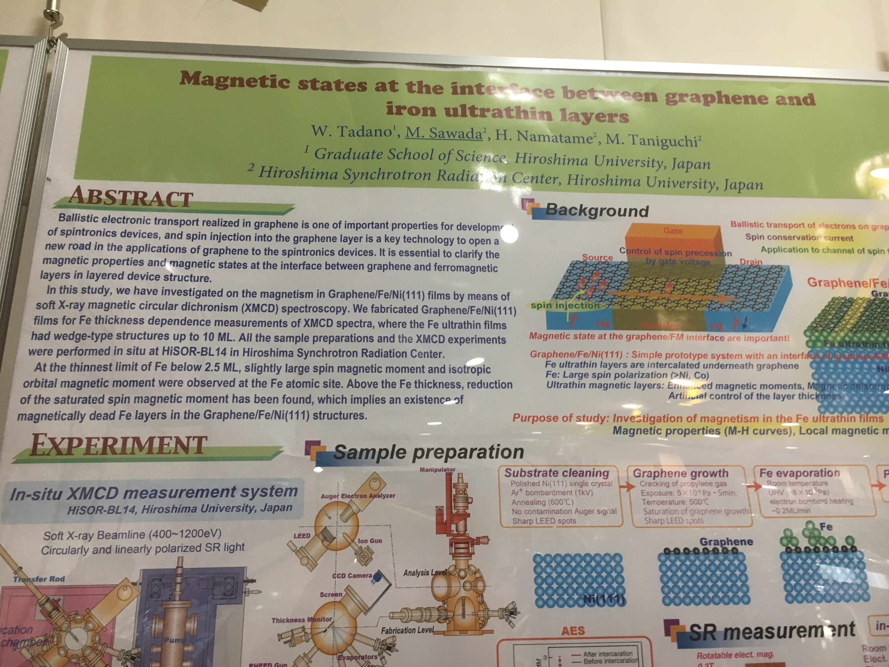
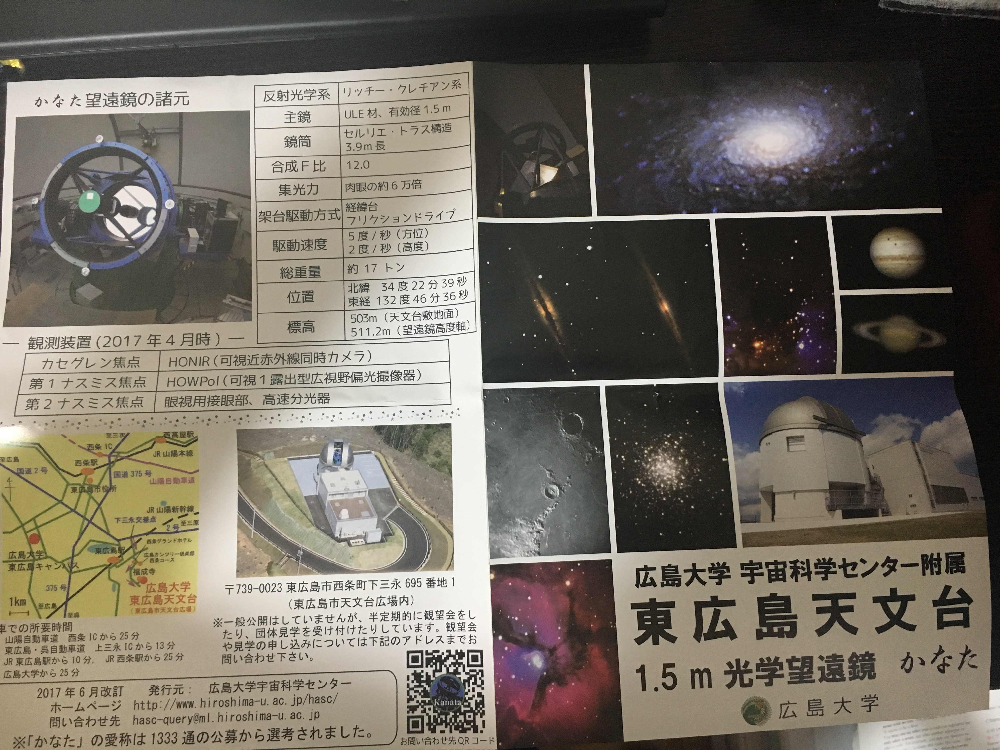
天文台当日有大巴车拉人去的。
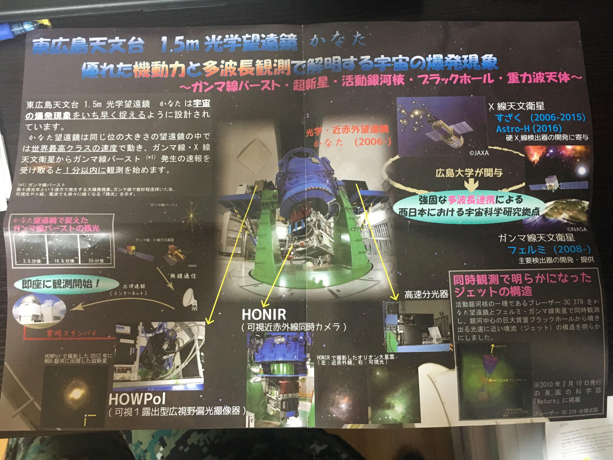
2020年2月10日，疫情刚开始时，校长自费（对，校长自己出钱，因为这边财政不能随便用公款的）请留学生吃午饭进行慰问，期间校医生还教我洗手。学校只有一位校医生，会英语，是医学博士（想起来以前北京上大学的校医生大家都不觉得不靠谱）。

现场

医生教我们洗手

吃饭时发下来的单张。

20200210
武汉肺炎午餐会
今天参加了一个免费午餐会，目的是在这个武汉肺炎时候慰问留学生，下面是朋友翻译的话：
校长说，因为新型肺炎很多留学生不能回国。跟副校长商量了一下，决定举办留学生交流会。给大家元気づけcheer up 。特别是广岛大学的留学生63%是中国留学生。希望大家一起加油。
老师说是校长请客，给大家加油，让我们吃的开心。
然后上海领事馆的前任领事给我们中文致辞，中文太好了。还有医生要介绍怎么洗手。
那些领导的话我也听不懂，除了说中文那位前上海领事。不过医生教洗手那段倒是不错，显得不是官方活动，有实际作用的，现场还派发学校政策，及教我们如何防范，做的很好。虽然我也没见吃饭时校长慰问学生，但他出钱（民主国家就是不能随便拿钱吃喝玩乐的）请客，我觉得还是很有心，第一次发现学校领导和学生是有接触的渠道的。
下一章